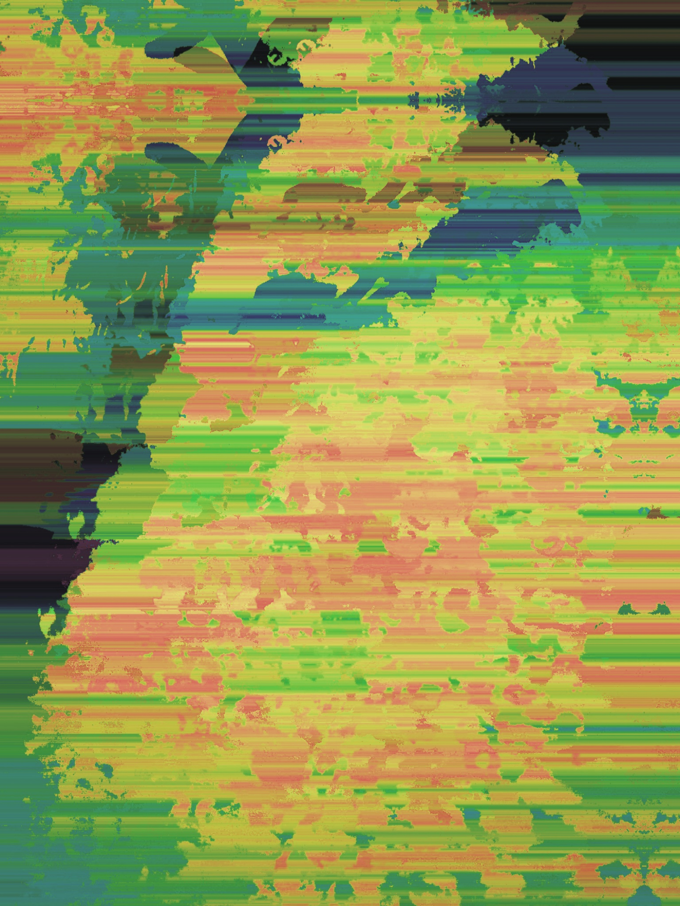

Interpretación abstracta
Podemos interpretar estas imagenes de una manera subjetiva ya que en si no intentan ser algo real ya que es una modificacion de la realidad.
En el siguiente ejemplo podemos decir que la imagen puede ser un bosque o
algo relacionado con la naturaleza pero si vemos la imagen real no tiene ninguna conexion con la imagen original.
 |

|
Volver